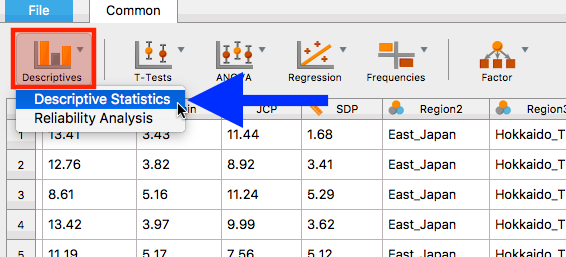
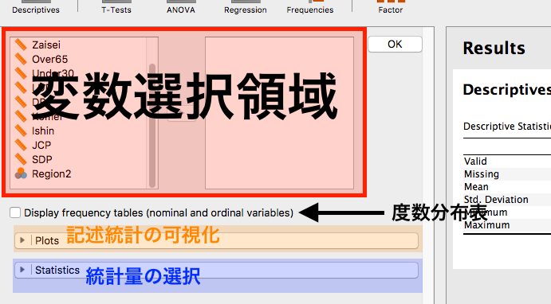
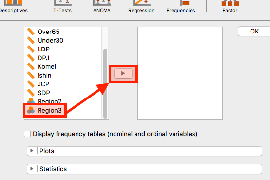
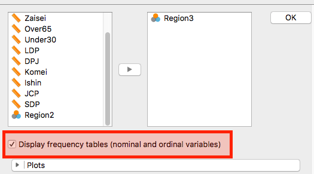
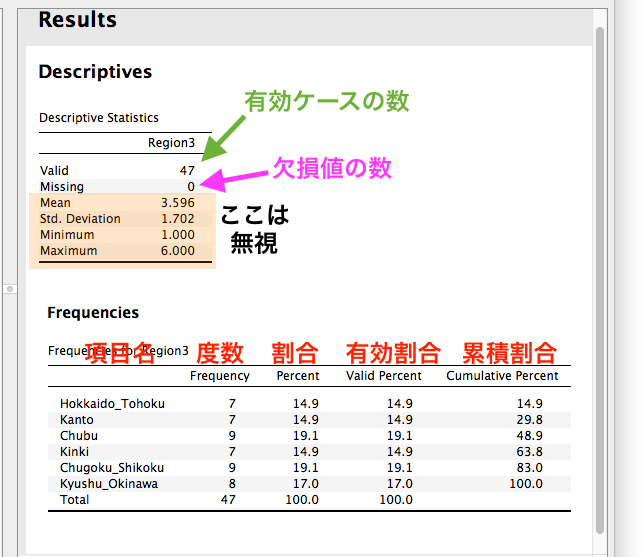
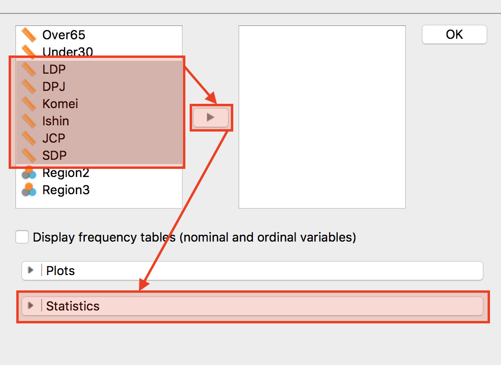
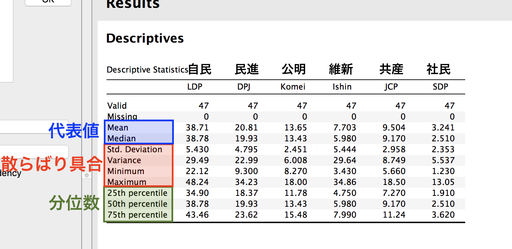

- ここでは記述統計の出し方を実習します。ここでは以下の項目について実習します。

- 分析メニューの「Descriptives」をクリックし、「Descriptive Statistics」を選択します。

- 記述統計を出すためにはまず、変数選択領域で記述統計を出す変数を選択します。つづいて、どのような統計量を出すかを指定し、必要によっては記述統計をグラフで表現します。また、名目変数や順序変数の場合は、度数分布表を作成することも可能です。
- ここでは可視化を除いて説明します。記述統計の可視化については今後の講義で説明します。
名目変数の記述統計
- 名目変数の場合、主に「度数分布表」と「最頻値」を使います。これは、各値が何個あるかを表で表したものです。
- 名目変数の場合、ほとんどの場合において平均値、中央値、分散に意味がありません。
- 今回の実習データに名目変数は「
ID」、「Region2」、「Region3」があります。ここでは「Region3」の度数分布表を作成しましょう。

- 変数選択領域の左側にはデータ内の変数名が並んでいます。ここから「
Region3」を選択し、「▶」をクリックして右側のボックスに移動します。
- この時点で右側の分析結果画面に何か表が出てきますが、無視して先に進みましょう。

- 「Display frequency tables (nominal and ordinal variables)」にチェックを入れます。
- 「度数分布表の表示 (名目・順序変数)」という意味です。つまり、連続変数を入れてからチェックをしても何も変わりません。
- ここまでしたら度数分布表が表示されます。

- 分析結果画面の見方について説明します。
- Descriptive Statics (記述統計)
- Valid（有効ケースの数）：欠損値を除外した値の数です。今回は欠損値がないので47個です。
- Missing（欠損値の数）：欠損値、つまり空白になっているセルの数です。今回は欠損値がないので0です。
- 以下の部分：平均値、標準偏差、最小値、最大値です。しかし、名目変数の場合、これらの統計量に意味がないので無視します。しかし、順序変数の場合は、ここも見ます。
- Frequencies (度数 / 頻度)
- 1列目: 各項目のラベルが表示されます。もし、ラベルを付けなかった場合は、元の数字が出ます。
- Frequency（2列目）：各項目がデータ内に何個あるかです。たとえば、データ内にKanto (関東)は7個、Chubu (中部)は9個含まれていることを意味します。
- ここから最頻値 (mode)が算出できます。ここではChubu (中部)とChugoku_Shikoku (中国・四国)の度数が9個であり、最も多い値ですね。したがって、最頻値はChubuとChugoku_Shikokuです。
- Percent（3列目）：各項目がデータの何割を占めているかです。たとえば、Hokkaido_Tohoku (北海道・東北)は全体の14.9%を占めています。
- Valid Percent（4列目）：上のPercentと似ていますが、この場合は、ケースの数ではなく、上の表にあるValid (有効ケース数)で割った値です。今回は欠損値がないので「ケース数 = 有効ケース数」なのでPercentと一致します。
- Cumulative Percent（5列目）：累積割合です。北海道・東北の累積割合は14.9%、関東の累積割合は北海道・東北の累積割合 + 関東の割合 = 29.8のような感じです。最終的には100.0%になりますね。
- これで名目変数の記述統計の出し方は終わりです。順序変数の度数分布表も同様に出します。
連続変数の記述統計
- これからは連続変数の記述統計を出してみましょう。ここでの連続変数は各政党の得票率です。先ほどと同様、「記述統計」画面を出します。

- 各政党の得票率は「
LDP」から「SDP」変数です。これを同時に選択し (LDPを選択→Shiftキーを押したままSDP選択)、「▶」をクリックしてから、下段の「Statistics」(統計量)を選択します。

- どのような統計量を表示させるかが選択できます。ここでは私の担当講義で取り上げた統計量について説明します。
- 分位数
- 代表値
- 「Mean」：平均値
- 「Median」：中央値
- 「Mode」：最頻値
- 散らばり具合
- 「Std. deviation」：標準偏差
- 「Variance」：分散
- 「Minimum」：最小値
- 「Maximum」：最大値
- 歪度・尖度：ここでは説明しません。
- この中から、「Quartiles」、「Mean」、「Median」、「Std. deviation」、「Variance」、「Minimum」、「Maximum」にチェックを入れます。

- 分析結果画面に記述統計の表が表示されます。
- 代表値と散らばり具合は先ほどの図と同様です。ここでは分位数についてのみ説明します。
- 「25th percentile」: 第1四分位点 (Q1/4)
- 「50th percentile」: 第2四分位点 (Q2/4) =中央値
- 「75th percentile」: 第3四分位点 (Q3/4)